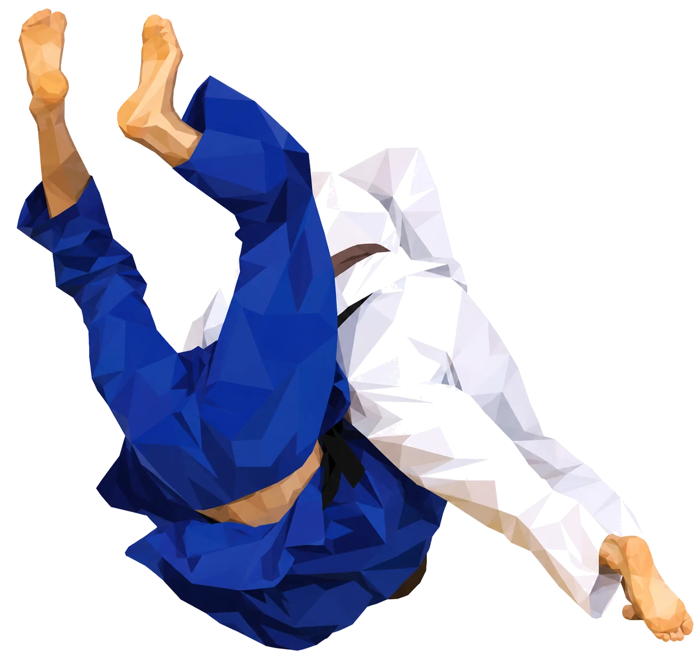

02 Le club
Une pratique.
Une pratique.
Un art de vie.
Un code moral.

À l’ACB Judo, on apprend à tomber et à se relever, à respecter l’autre et à se dépasser. Le judo y est transmis comme une école de la vie — pour les petits comme pour les grands.
